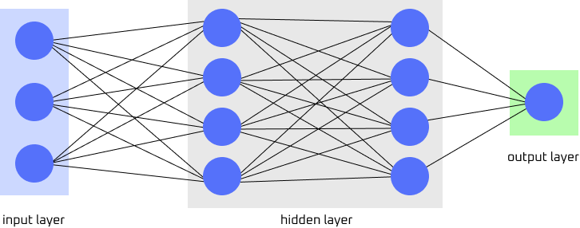

NEURAL NETWORKS
OVERVIEW
Inspired by the human brain, a neural network is a computational machine learning algorithm that is composed of interconnected layers of nodes. This is similar to a human brain where neurons are connected to relay signals to other neurons! Also known as artificial neural network (ANN), neural network excels at pattern recognition, information classification, and learning. It is a powerful tool used today! To train a neural network, a node (or neuron) receives inputs of large datasets that are then adjusted with weights (input layer). Connections are then created and adjusted as well forming a complex neural network. This poriton of the network is also called the hidden layer. The process reiterates as more data is fed to the system, refining the weights as the network grows and minimizes errors between the network's prediction and actual values in the output layer.

Figure provided by Serena Ngo
ADVANTAGES AND DISADVANTAGES
Neural networks are very adaptable as they can refine their output with more data it recevies. This gives neural networks the ability to "learn", with proficiency in pattern recognition and parallel processing. Because of this, they are able to model relationships in datasets in a non-linear way. However, this makes neural networks resource intensive. They are computionally heavy and require large datasets. Neural networks also fall victim of overfitting where they commit learning through memory rather than actually identifying relationships and problems.
SEE MORE